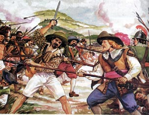

Por que os holandeses invadiram o Brasil?

A Holanda participava diretamente no negócio açucareiro do Brasil, eram eles que financiavam o desenvolvimento do empreendimento aqui e contribuíam com o refino e com a comercialização do açúcar na Europa. Contudo, essa relação sofreu grandes transformações com a crise da dinastia de Avis em Portugal no final do século XVI. Essa crise foi causada pela morte do Rei de Portugal, D. Henrique, e não deixou herdeiros diretos.
Uma competição pelo cargo ocorreu e finalizou com a coroação do Rei da Espanha, Filipe II, como Rei de Portugal. Assim, essa unificação ficou conhecida como União Ibérica. O fato era que a Espanha estava em guerra contra a Holanda e isso foi a causa das profundas modificações na relação entre Holanda e Portugal.
Como foi a invasão?

O que causou a decadência da colônia holandesa?
O fim da Colônia Holandesa pode ser explicado através da falência da Companhia das Índias Ocidentais, que prejudicou severamente os holandeses. Além disso, houve a demissão de Maurício de Nassau o qual era o governador-geral da colônia. Esses problemas fizeram com que a Holanda parasse de investir o suficiente na colônia, não tendo a segurança necessária. Isso foi uma péssima escolha para os holandeses, dado que a restauração de Portugal em 1640 fez crescer boatos de que os portugueses batalhariam contra os holandeses pela posse de Pernambuco.
Em 1645, vários conflitos estouraram e ficou conhecida como Guerras Brasílicas. Os portugueses tiveram os donos de engenhos, negros e de indígenas como aliados. Para a Holanda os recursos estavam escassos e diminuíram ainda mais quando ela e a Inglaterra entraram em guerra. Os holandeses não estavam conseguindo manter a colônia e a Batalha de Guararapes decretou os tempos finais dela. Portugal cercou Recife e conseguiu tomar a região de volta após 24 anos de domínio holandês. Também ouve a reconquista do território invadido pelos holandeses na África.